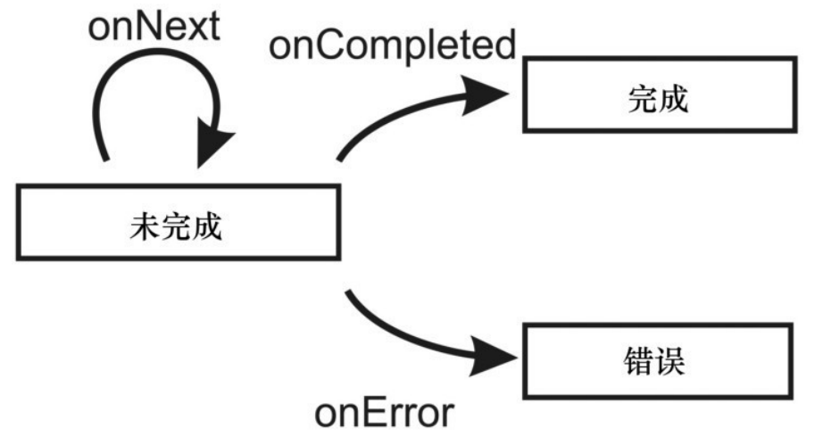

1. 第6章: 基于响应式扩展的并发编程
Future 和 Promise 将并发编程推向了一个新高度。
- 首先, 不会因为生产者和消费者之间的计算和结果传输过程而产生阻塞。
- 其次, 可以很方便地将简单 Future 对象组合成复杂对象, 这样的程序会更精简。
- 经过 Future 封装的异步计算过程更清晰和易懂。
- 不过, Future 的一个缺点是它只能处理单个计算结果。
- 对只产生一个值的异步计算而言, Future 是够用的, 但有时候需要响应来自同一个计算的不同事件。
和 Future 不一样, 事件流可产生任意数目的值, 这种值称为事件。
- 事件流可以像普通值一样用于表达式中。
- 和 Future 一样, 这类事件流可以用函数式组合子组合起来或进行变换。
在计算机科学中, 事件驱动编程(event-driven programming)指的是程序控制流由事件决定的编程⻛格。
Future 和事件流都可以归入事件驱动编程抽象模型。
另一个与事件驱动密切相关的领域是响应式编程, 响应式编程主要处理程序中的数据流和数据变化的传播。
- 传统上, 响应式编程被定义为一种支持在程序和数据值之间定义各种约束的编程⻛格。
- 随着对并发性的需求日益迫切, 对事件驱动和响应式编程的需求也越来越大。
- 传统的基于回调和命令式 API 的方式已经难以满足需求, 因为这种方式会混淆程序控制流, 让并发性和程序逻辑混在一起, 且依赖于可变状态。
- 在大型应用程序中, 大量没有组织好的回调函数有一个专⻔的名称, 即"回调地狱", 表示程序员已经无法搞清楚程序的控制流到底是什么样的。
- 换句话说, 回调就是响应式编程中的 GOTO 语句。事件流组合方式可以控制好回调声明, 让程序员可以更容易地表达程序逻辑, 从而以一种更加结构化的方式来构建基于事件的系统。
响应式扩展(Reactive Extensions, Rx)是一种用事件流将异步和事件驱动程序组合起来的编程框架。
- 在 Rx 中, 事件流产生类型为 T 的事件, 表示为类型
Observable[T]。 - Rx 框架同时集成了响应式编程和事件驱动编程中的编程原理。
- 围绕 Rx 的基本概念可以用类似的方式处理事件和数据。
- 在 Rx 中, 事件流产生类型为 T 的事件, 表示为类型
使用 Rx 具体涉及如下几个方面。
- Observable 对象的创建和订阅。
- Observable 对象的生命周期, 以及如何定制一个 Observable 对象。
- 通过订阅来取消事件源。
- 用 Rx 组合子将 Observable 对象组合起来。
- 用 Rx 调度器实例控制并发性。
- 使用 Rx Subject 来设计更大型的应用程序。
1.1. 创建 Observable 对象
Observable 对象中定义了一个叫作 subscribe 的方法, 其参数是一个被称为观察者(observer)的对象。
观察者是由用户指定的对象, 其中实现了事件处理的业务逻辑。
当某个观察者调用 subscribe 方法时, 这个观察者订阅了相应的 Observable 对象。每当此 Observable 对象产生一个事件时, 订阅的观察者就会得到通知。
Scala 的 Rx 实现不属于 Scala 标准库, 在 Scala 中使用 Rx 需要在 build.sbt 文件中加入相应的依赖。
subscribe 方法的参数是一个回调函数, 这样, 每当 Observable 对象产生一个事件时, 这些回调函数就会被触发。
- 实现这一点的方法是创建一个 Observer 对象。
- 和 Future 的区别在于, Observer 对象可以产生多个事件。
上例中 subscribe 方法是同步执行的, 即它处理完事件流中的所有事件之后才返回。但情况并不总是如此。其具体的行为则和 Observable 对象的实现有关。
Observable 对象既可同步发送事件也可异步发送事件, 这取决于 Observable 对象的具体实现。
- 大部分情况下订阅的时候要早于事件产生的时候, 如 UI 事件、文件修改事件或 HTTP 响应事件。
- 为了避免阻塞调用 subscribe 方法的线程, Observable 对象在发送这类事件时都是异步的。
1.1.1. Observable 对象和异常
异步计算有可能会抛出异常, 这时, 相应的 Future 对象就会失败, 即它的完成结果不是一个值, 而是反映了异步计算失败的一个异常。
Future 对象可以通过 failed.foreach 或 onComplete 方法来注册回调函数, 以对这些异常进行处理。
Observable 对象中产生事件的计算过程也有可能抛出异常。
- 为了响应 Observable 对象抛出的异常, 可以使用另一个重载的 subscribe 方法, 此方法接收两个回调函数, 生成一个观察者。
- 两个回调函数分别是处理事件的回调和处理异常的回调。
如果没有在 subscribe 方法中传入第二个回调, 则异常就会被 Observable 对象抛出来, 但观察者永远不会得到通知。
当异常发生时, Observable 对象不再允许发送任何其他事件。
- 如果 Observable 对象产生了一个异常, 则它就进入了错误状态, 并且不再发送事件。
- 无论是工厂方法生成的 Observable 对象, 还是定制的 Observable 对象, Observable 对象产生异常之后都不再允许发送事件。
1.1.2. Observable 规约
每个 Observable 对象都有 3 个状态: 未完成、错误和完成。
- 只要
Observable[T]对象处于未完成状态, 它就可以发送类型为 T 的事件。 - 如果它产生了一个异常, 则表示它进入了错误状态, 从而再也无法发送任何事件了。
- 如果一个 Observable 觉得自己不再需要产生数据了, 它也可以进入完成状态。
- 当一个 Observable 对象处于完成状态时, 它也不能再发送事件。
- 只要
在 Rx 中, 订阅了一个 Observable 对象的对象被称为观察者。
Observer[T]特质有 3 个方法: onNext、onError 和 onCompleted。- 其分别用于响应 Observable 对象
发送事件、产生错误和进入完成状态。
一般而言, Observable 对象只有在确定没有多余事件的情况下才会调用 onCompleted 方法。
- Observable 对象在发送事件时都会调用它的 Observer 对象上的 onNext 方法
- 调用 Observer 对象的 onCompleted 表示它进入了完成状态
- 调用 onError 则表示它进入了错误状态
- 上述过程被称为 Observable 规约
Observable 的状态转换

Observable 对象如果没有事件可以发送了, 它可以调用 onCompleted 或 onError, 不 过, 它也可以两者都不调用。
有些 Observable 对象知道它的最后一个事件是哪一个。而很多 Observable 对象并不知道它的最后一个事件是哪一个。
Observable 对象可以没有限制地调用订阅的 Observer 对象上的 onNext 方法。
它也可以调用 onCompleted 或 onError, 也可以不调用, 但一旦调用了之后, 就再也不允许调用任何 Observer 方法了。
Rx API 产生的 Observable 对象实现了上述 Observable 规约。在实践中, 用户一般并不需要关心 Observable 规约, 除非自己定制 Observable 时才需要考虑。
1.1.3. 定制 Observable 对象
- 可以用工厂方法 Observable.create 创建一个定制的 Observable 对象。
- Observable.create 方法接收一个函数 f, 返回的是一个新的 Observable 对象, f 将一个 Observer 对象映射为一个 Subscription 对象。
- 每当 subscribe 方法被调用时, 函数 f 就会作用于相应的 Observer 对象, 它返回的 Subscription 对象可用于解除 Observer 对象对 Observable 对象的订阅。
- Subscription 特质只定义了一个称为 unsubscribe 的方法。
def create(f: Observer[T] => Subscription): Observable[T]
1.1.4. 由 Future 对象创建 Observable 对象
Future 对象用于封装异步计算的结果, 而 Observable 对象可视为 Future 对象的一般化。
和 Future 只生成一个成功事件或失败事件不同, Observable 对象发送一系列事件, 然后才进入错误状态或完成状态。
Scala API 中处理异步计算的方式一般是返回 Future 对象, 而不是返回 Observable 对象。
在有些情况下, 用户可能需要将 Future 对象转化为 Observable 对象。
- 即 Future 成功完成时, 相应的 Observable 对象必须发送一个包含了 Future 完成值的事件, 然后调用 onCompleted 方法。
- 如果 Future 对象失败, 则相应的 Observable 对象应该调用 onError 方法。
实际上, 这种模式使用得过于频繁, 以至于 Rx 中都专⻔实现了一个工厂方法 Observable.from, 它可以直接将 Future 对象转化为 Observable 对象。
Observable.create 方法常用于将基于回调的 API 转化为 Observable 对象。
在空的 Subscription 对象上调用 unsubscribe 方法不会有任何效果。
- 有时候, Subscription 对象需要释放相应的 Observable 对象上的资源, 这时候实现 unsubscribe 方法就有必要了。
1.1.5. 订阅
第二次调用 unsubscribe, 取消订阅的代码块并不会再次运行, 这种行为称为幂等(idempotent), 即多次调用和一次调用的效果相同。
- 当定制 Subscription 特质时, 需要保证 unsubscribe 方法是幂等的, 而 Subscription.apply 方法的作用就是方便地实现幂等性。
- Subscription 特质中的 unsubscribe 方法的实现必须是幂等的。
- 使用 Subscription.apply 方法可以创建默认幂等的 Subscription 对象。
在 Rx 中, Observable 对象只有在订阅存在时才会发送事件, 这类 Observable 对象被称为冷观察对象。
有些 Observable 对象在没有订阅的情况下仍然发送事件, 这类 Observable 对象被称为热观察对象, 这种情况常发生在处理用户输入的场景, 如处理键盘事件和鼠标事件。